Publications and images
Papers from 2019 onwards co-authored by the unit's staff, Einat Zelinger, Tally Kossovsky and Daniel Waiger, and a gallery of figures from those papers that were imaged here. The list was compiled from PubMed, Europe PMC and Crossref and may be incomplete. If one of your papers with us is missing, please send it to us.
From our microscopes
Figures from papers that state the imaging was done at the unit, reused under their Creative Commons licences. Each figure is shown whole, as published. Where a figure also contains plots, drawings or images from other microscopes, the description says which panels came from the unit. Select a figure to see it larger with its original caption.
26 of 26 figures shown
Scanning electron microscopy (SEM)

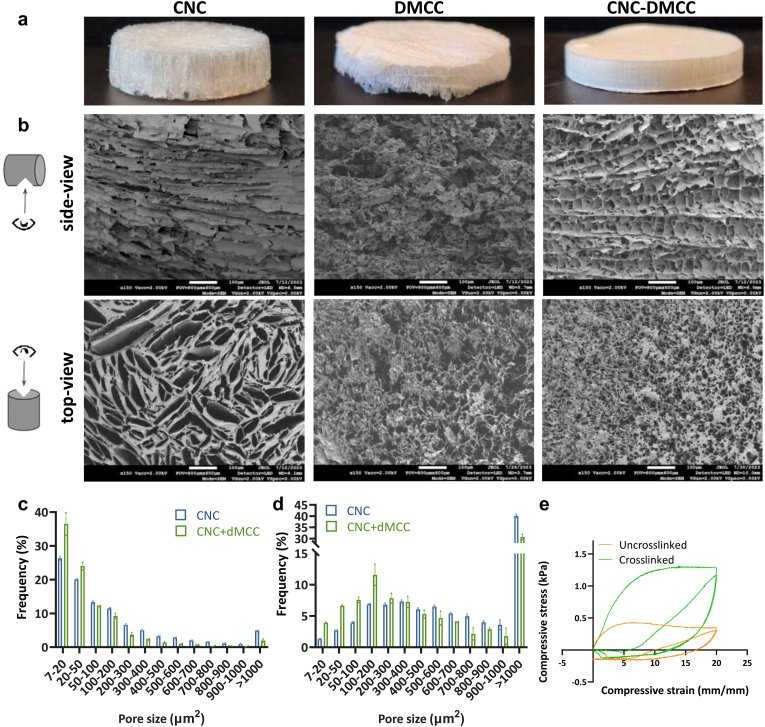
Cellulose scaffolds for cultivated meat seen by SEM from the top and the side, showing their porous, aligned structure (panel b, the unit's microscopy), with photographs of the scaffolds (a) and pore-size and compression plots (c to e).
Figure 1 from Gershkoviz et al., Current Research in Food Science (2026): Growth factors-infused cellulose scaffolds support cost-efficient proliferation and differentiation of bovine stem cells for cultivated meat. Licence: CC BY-NC 4.0 (non-commercial licence).
Original caption
Cellulose scaffolds are porous and directional. Two types of cellulose and their combination were evaluated as scaffold material. a Images of 1% dry, crosslinked CNC, dMCC, and 1:1 CNC-dMCC scaffolds (diameter = 3 cm). b Scanning electron microscopy images depicting top and side views of 1% dry crosslinked CNC, dMCC, and 1:1 CNC-dMCC scaffolds (scale bar = 100 μm). c Pore diameter frequency and d pore area distribution of dry CNC and CNC-dMCC scaffolds. Points represent individual values, bar heights and error bars represent mean ± s.e.m. (n = 2). e Representative results of cyclic compression loading of crosslinked and uncrosslinked 1% CNC scaffolds (wet). Negative stress values are the result of scaffold adhesion to testing surfaces at the uncompressed end of each cycle.

SEM of 20 µm cryostat sections through the fruit fly's sperm-storage organ, comparing its folded inner lining in virgin and mated females, with sperm and tiny vesicles (80 to 100 nm) on the surface.
Figure 6 from Zelinger et al., Communications Biology (2024): Three-dimensional correlative microscopy of the Drosophila female reproductive tract reveals modes of communication in seminal receptacle sperm storage. Licence: CC BY 4.0.
Original caption
Scanning electron microscopy showing the inner lumen of virgin and mated distal seminal receptacle. 20 µm thick cryostat cross-sections of virgin (a, b) and mated (c, d) distal seminal receptacle. a The inner surface of the intima in virgin; L, lumen; corrugated intima marked by white asterisk. b Zoom into the intima surface enabled to detect vesicles at a size of 80–100 nm in diameter (see inset, white arrows) on the corrugated intima (marked by white asterisk). In addition, pits at different sizes are visible on the intima (white arrow heads); some of the pits are similar in size to the vesicles. c Distal seminal receptacle of mated female filled with sperm (S) showing the corrugated intima marked by white asterisks (internal view, one asterisk; external view, two asterisks). d A zoom-in on the intima layer that shows vesicles on the intima close to the sperm (white arrow). The sperm tails (S) that fill the lumen seem to be surrounded by diffuse extracellular material (white arrow head) (d). Scale bar = 1 µm.

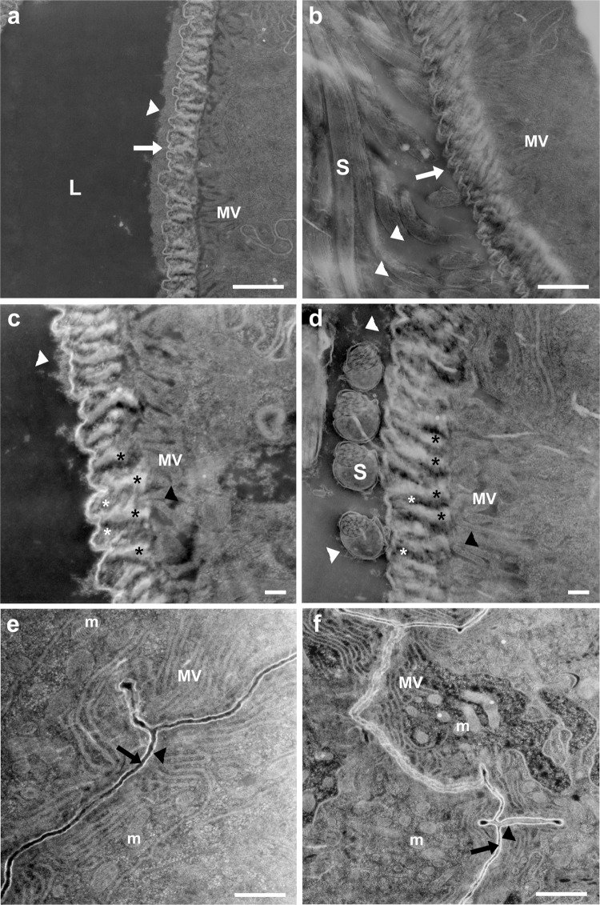
Dark-field scanning transmission images taken in the SEM (STEM) of the lining of the fruit fly's sperm-storage organ, showing that the dense layer on its surface is thinner after mating.
Figure 8 from Zelinger et al., Communications Biology (2024): Three-dimensional correlative microscopy of the Drosophila female reproductive tract reveals modes of communication in seminal receptacle sperm storage. Licence: CC BY 4.0.
Original caption
Mating induces changes in the intima layer at the proximal and distal seminal receptacle. Zooming in on the intima at the distal (a–d) and proximal (e, f) regions of the seminal receptacle using scanning transmission electron microscopy (STEM in SEM). a, c View of the corrugated surface of the intima in virgin distal seminal receptacle (white arrow). A layer of electron-dense substance deposited on the intima surface (white arrow). Short brush-border microvilli (MV) are visible at the apical epithelium in both virgin and mated distal seminal receptacle (a–d); black asterisks mark the ridges/fiber of the corrugated intima in virgin (c), and mated (d) that are parallel to the microvilli layer (black arrow heads); white asterisks mark the space between the fibers. b, d In mated, the layer of electron-dense substance deposited on the intima surface is thinner than in virgin (a, c) white arrow heads. The lumen contains sperm (S) and diffuse extracellular material (white arrow heads) that surrounds the sperm (b, d). The proximal seminal receptacle epithelia in virgin (e) and mated (f); microvilli (MV); mitochondria (m); lumen (black arrow); intima (black arrow head). All STEM images are in dark field mode. Scale bar: a, b, e, f = 1 µm; c, d = 200 nm.

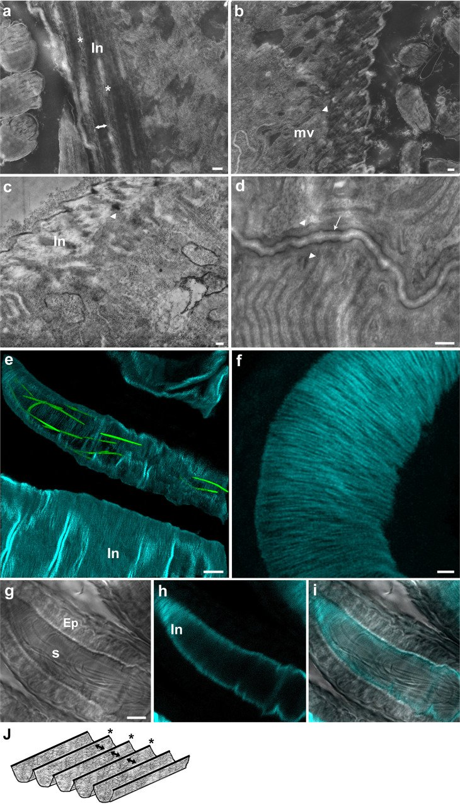
The chitin fibre mesh lining the fruit fly's sperm-storage organ, seen in STEM-in-SEM images (a to d) and in confocal images of chitin stained with calcofluor white and GFP-labelled sperm (e to i); panel j is a schematic drawing.
Figure 9 from Zelinger et al., Communications Biology (2024): Three-dimensional correlative microscopy of the Drosophila female reproductive tract reveals modes of communication in seminal receptacle sperm storage. Licence: CC BY 4.0.
Original caption
High resolution visualization of seminal receptacle intima layer and chitin fibers. STEM images of distal and proximal seminal receptacle sections (a–d) and confocal images of distal seminal receptacle (e–i). Longitudinal (a) and transversal (b) sections of the distal seminal receptacle in mated showing the nanofiber fiber mesh organization (white asterisks) of the corrugated intima (In); double-ended arrows indicate the grooves between the ridges marked by white asterisks (a). Vesicles of various sizes are seen in the lumen of the distal seminal receptacle and in close proximity to the sperm (S) (white arrows) (b). The corrugated intima (In) of the virgin seminal receptacle, highlighting the electron-dense substance deposited on the surface and the orientation of the intima in relation to the microvilli (mv) (c); the intima is positioned perpendicular to the microvilli (white arrow heads, b, c). The proximal seminal receptacle thin layer intima (white arrow) facing the thick extracellular matrix (marked by white arrow heads) of the long microvilli (mv) in mated (d). e–i Confocal images of the distal seminal receptacle of female mated to protamine-GFP male and stained with Calcofluor white. The organization of the protamine-GFP sperm heads in the lumen of the seminal receptacle, that is lined by chitin fibrous intima (cyan) (e). The stained intima shows that it consists of chitin fibers (f). Bright field image showing sperm tails (s) inside the lumen and the epithelium (Ep) lined by the intima (g). A fluorescent image that shows the intima layer stained for chitin and marked by cyan (h). An overlay of g and h emphasizing the chitin based intima (i). j A schematic drawing showing our proposed organization of chitin fiber mesh of the corrugated intima; double- ended black arrows indicate the grooves between the ridges marked by black asterisks. Scale bar: a–d = 100 nm; e, g = 5 µm; f = 2 µm.

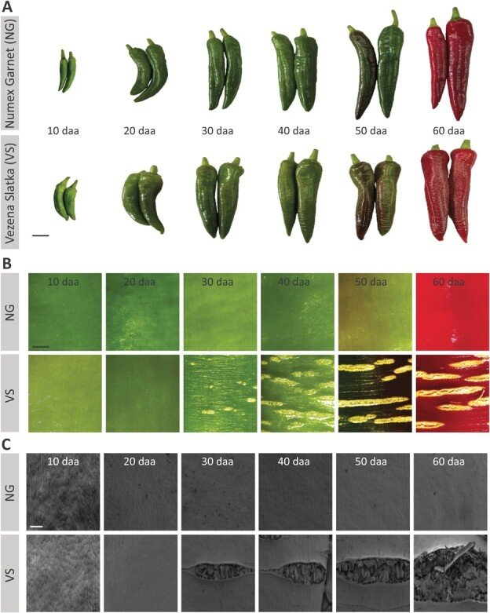
Skin cracking in chili pepper fruit followed from 10 to 60 days after flowering: photographs of the fruit (A), light micrographs taken on another microscope (B) and the unit's SEM images of the skin surface (C).
Figure 1 from Marinov et al., Horticulture Research (2023): Microscopic and metabolic investigations disclose the factors that lead to skin cracking in chili-type pepper fruit varieties. Licence: CC BY 4.0.
Original caption
The skin of Vezena Slatka fruit undergoes severe cracking during development. (A) The fruit phenotypes, (B) light microscopy images of the fruit skin surfaces, and (C) scanning electron microscopy (SEM) images of fruit skin surfaces, of smooth-skin Numex Garnet (NG) and cracked-skin Vezena Slatka (VS) pepper at 10, 20, 30, 40, 50 and 60 days after anthesis (daa). Scale bars in (A) = 2 cm, in (B) = 5 mm, and in (C) = 300 μm.

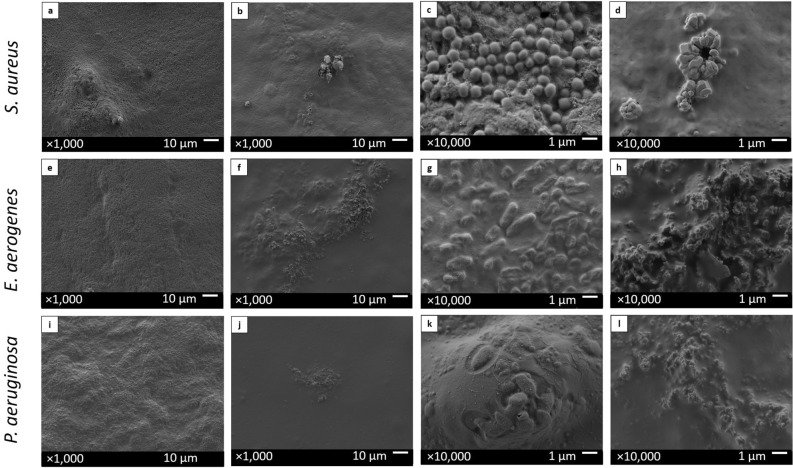
SEM images of three clinical bacterial species grown for 48 hours on nasal splints with and without a zinc chloride coating, at 1,000 and 10,000 times magnification.
Figure 5 from Noach et al., Scientific Reports (2023): Zinc chloride is effective as an antibiotic in biofilm prevention following septoplasty. Licence: CC BY 4.0.
Original caption
Biofilm growth of clinical bacteria on ZnCl2-coated splints and on non-ZnCl2-coated splints, captured by SEM. Staphylococcus aureus (a–d), Enterobacter aerogenes (e–h) and Pseudomonas aeruginosa (i–l) were grown for 48 h on ZnCl2-coated splints (b,d,f,h,j,l) and on positive growth control non-ZnCl2-coated splints (a,c,e,g,i,k). Images were taken with an accelerating voltage of 2 kV at magnifications of 1000 (a,b,e,f,i,j) and 10,000 (c,d,g,h,k,l).

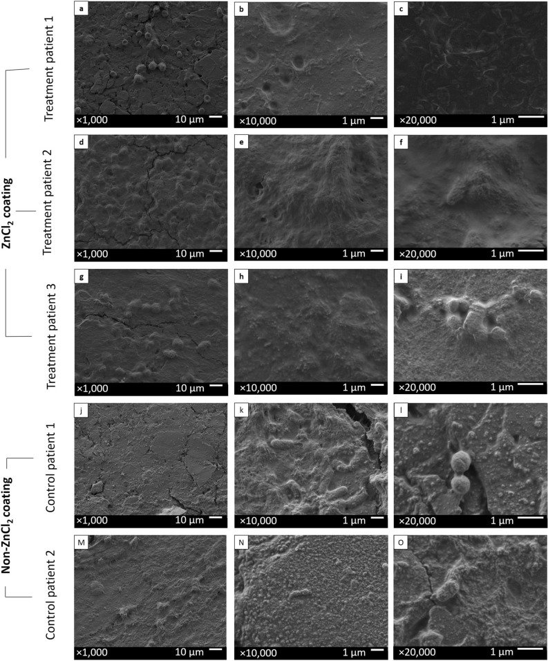
SEM images of nasal splints after seven days in patients' noses, comparing zinc chloride-coated splints with uncoated splints at three magnifications.
Figure 6 from Noach et al., Scientific Reports (2023): Zinc chloride is effective as an antibiotic in biofilm prevention following septoplasty. Licence: CC BY 4.0.
Original caption
Splints taken from the clinical patients after a 7-day period in the patients’ nasal cavities, captured by SEM. ZnCl2-coated splints (a–i) were inserted into the nasal cavities of three patients for a 7-day period following septoplasty. Regular non-ZnCl2-coated splints (j–o) were inserted for a period of 7 days into the nasal cavities of two patients under prophylactic antibiotic treatment and were used as negative growth controls. Splints were removed from the patients’ nasal cavities and captured by SEM; treatment patient 1 (a–c), treatment patient 2 (d–f), treatment patient 3 (g–i), control patient 1 (j–l) and control patient 2 (m–o). Images were taken with an accelerating voltage of 2 kV at magnifications of 1000 (left column), 10,000 (middle column), and 20,000 (right column).

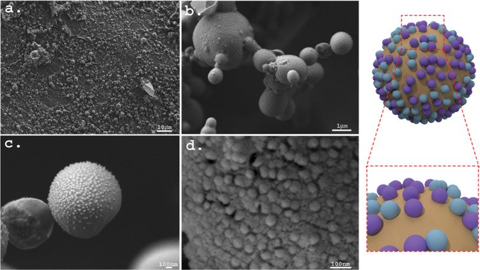
Cryo-SEM images of frozen, fractured emulsion droplets stabilised by virus-like particles, showing the particles packed at the oil-water interface; a schematic of a droplet is on the right.
Figure 6 from Mechrez et al., ACS Applied Bio Materials (2022): Platform for Active Vaccine Formulation Using a Two-Mode Enhancement Mechanism of Epitope Presentation by Pickering Emulsion. Licence: CC BY 4.0.
Original caption
Characteristic cryogenic HRSEM micrographs of 20:80 o/w Pickering emulsions stabilized by 1.3 wt % VLPs. Pickering emulsions vitrified, fractured, and subsequently subjected to controlled sublimation for interface exposure were analyzed: (a,b) the characteristic basic structure of a Pickering emulsion and (c,d) higher magnification micrographs (10×) showing the presence of the VLPs at the o/w interface of the oil droplets. A schematic illustration of the oil droplets in the VLP-stabilized Pickering emulsions is depicted on the right of the micrographs.

SEM images at three magnifications of two plant-pathogenic Pectobacterium strains on the leaf surfaces of calla lily and cabbage, three hours after inoculation.
Figure 2 from Khadka et al., Microorganisms (2020): Host Specificity and Differential Pathogenicity of Pectobacterium Strains from Dicot and Monocot Hosts. Licence: CC BY 4.0.
Original caption
SEM micrographs of (A) P. aroidearum PC16 and (B) P. carotovorum WPP14 on the leaf surfaces of calla lily and of cabbage. The micrographs were obtained 3 h after inoculation (10 µL, 108 cfu/mL) onto the host leaf surfaces. The colonization patterns were examined on 10 leaves for each plant. SEM images are presented (left to right) magnification 400×, bar =50 µm; 2000×, bar = 10 µm; magnification 7000×, bar = 1 µm.

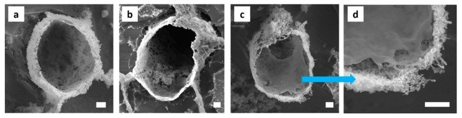
Cryo-SEM images of capsules made from a carbon nanotube and silica emulsion, showing silica nanoparticles at the droplet surface and a smooth polymer layer on the inside of the shell.
Figure 9 from Grzegorzewski et al., Polymers (2019): In situ Fabrication of Multi-Walled Carbon Nanotubes/Silica Hybrid Colloidosomes by Pickering Emulsion Templating Using Trialkoxysilanes of Opposite Polarity. Licence: CC BY 4.0.
Original caption
Cryo-SEM micrographs of the MWNT/silica emulsions. (a–d) Silica NPs are located at the interface and in the aqueous continuous phase. A polymeric smooth layer is formed at the inner side of the capsules with MWNTs embedded in between outer and inner shell layers. Sample composition: 10 vol% toluene-in-water with 2 wt% SiO2, 1 mg MWNTs, and 0.2 M APTES and DTES. Scale bar is 1 μm.

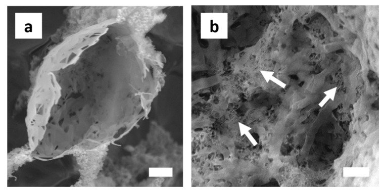
Cryo-SEM images of branched, ribbon-like polymer structures in a carbon nanotube and silica emulsion, with the nanotubes embedded in the polymer.
Figure 10 from Grzegorzewski et al., Polymers (2019): In situ Fabrication of Multi-Walled Carbon Nanotubes/Silica Hybrid Colloidosomes by Pickering Emulsion Templating Using Trialkoxysilanes of Opposite Polarity. Licence: CC BY 4.0.
Original caption
Cryo-SEM micrographs of ribbon-like polymeric structures. (a) The structures are randomly branched and of varying width and length. They probably form upon copolymerization of hydrolysed silane monomers that remained unreacted. Sample composition: 10 vol% toluene-in-water with 2 wt% SiO2, 2 mg MWNTs and 0.2 M APTES and DTES; (b) MWNTs, here indicated exemplarily by arrows, are embedded within the polymer matrix. Sample composition: 20 vol% toluene-in-water with 2 wt% SiO2, 2 mg MWNTs, and 0.2 M APTES and DTES. Scale bar in both images is 1 μm.

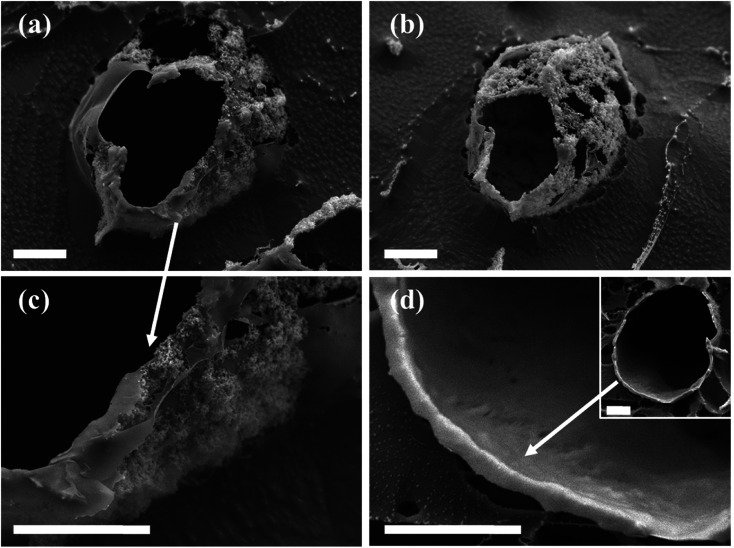
Cryo-SEM images of hollow colloidosomes, shells of silica nanoparticles held in a polysiloxane matrix, made using emulsion droplets as templates.
Figure 7 from Itzhaik Alkotzer et al., RSC Advances (2019): In situ interfacial surface modification of hydrophilic silica nanoparticles by two organosilanes leading to stable Pickering emulsions. Licence: CC BY-NC 3.0 (non-commercial licence).
Original caption
Cryo-SEM images of characteristic colloidosome structures templated from in situ DTES-and-APTES-functionalized SiO2-stabilized o/w emulsion droplets (scale bar 5 μm in all images): (a) and (b) The silica nanoparticles are fixed in place by the polysiloxane matrix, resulting in a shell structure called colloidosomes. (c) A closer look at the colloidal shell reveals that the silica nanoparticles are embedded in the polysiloxane matrix, which is formed during silanization reaction of APTES and DTES with silica. (d) A hollow shell templated from an emulsion droplet (inset), comprised of a thick, continuous, silica-polysiloxane matrix of ca. 700 nm thickness.
Confocal and fluorescence

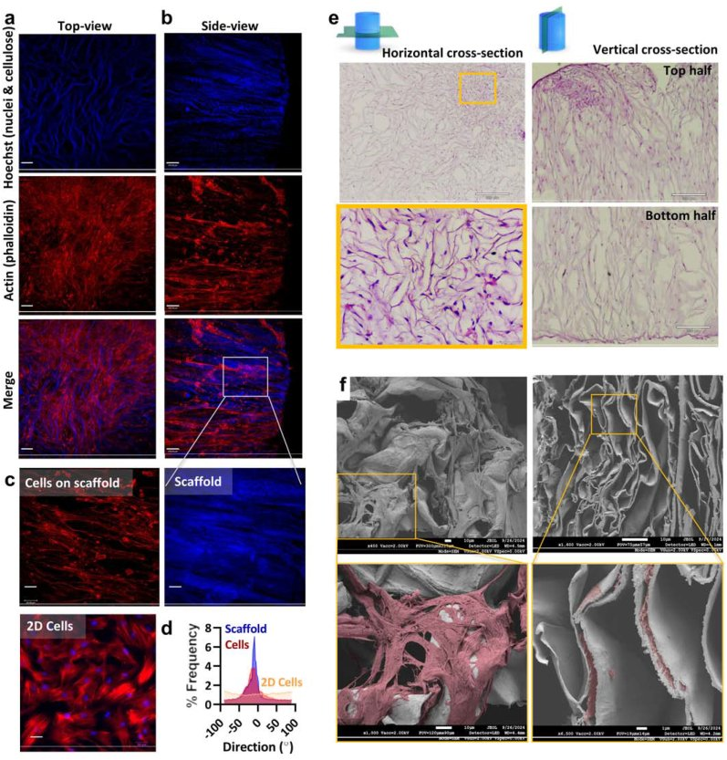
Bovine stem cells growing on a cellulose scaffold: the unit's microscopy is the confocal view of cells lined up along the scaffold (panel c) and the SEM views of the seeded scaffold (panel f); panels a, b and e were taken on other microscopes and d is a histogram.
Figure 3 from Gershkoviz et al., Current Research in Food Science (2026): Growth factors-infused cellulose scaffolds support cost-efficient proliferation and differentiation of bovine stem cells for cultivated meat. Licence: CC BY-NC 4.0 (non-commercial licence).
Original caption
bMSCs coverage, penetration and anisotropic growth. a Representative images of top and b side view of bMSCs grown on scaffold for 7 days, taken with fluorescent microscope. Cells stained with phalloidin (red), and scaffold and nuclei with Hoechst 33342 (blue) (scale bar = 100 μm). c Representative images taken with a confocal microscope showing the directional orientation of the CNC scaffold stained with Hoechst33342 (blue) and bMSCs grown on it stained with phalloidin (red), compared to 2D grown cells (scale bar = 50 μm). d Histogram depicting cell and scaffold orientation (of image 4D) quantified using the ImageJ Directionality plug-in. e H&E staining of bMSCs grown on 1% CNC scaffolds for one week. The horizontal section taken from a depth of 1.5 mm (scaffold height ∼3 mm) imaged with a light microscope (scale bar = 320 μm, scale bar = 50 μm). Vertical section taken from a depth of 1.2 mm (scaffold diameter ∼6 mm) showing the entire height of the scaffold-top and bottom halves (scale bar = 320 μm). Yellow arrows indicate the cells' nuclei (not all indicated). f Top-view (horizontal, left) and side-view (vertical, right) SEM images of scaffold seeded with MSCs. (scale bar: 10 and 1 μm). Red pseudo-color highlights the cells in the lower images.

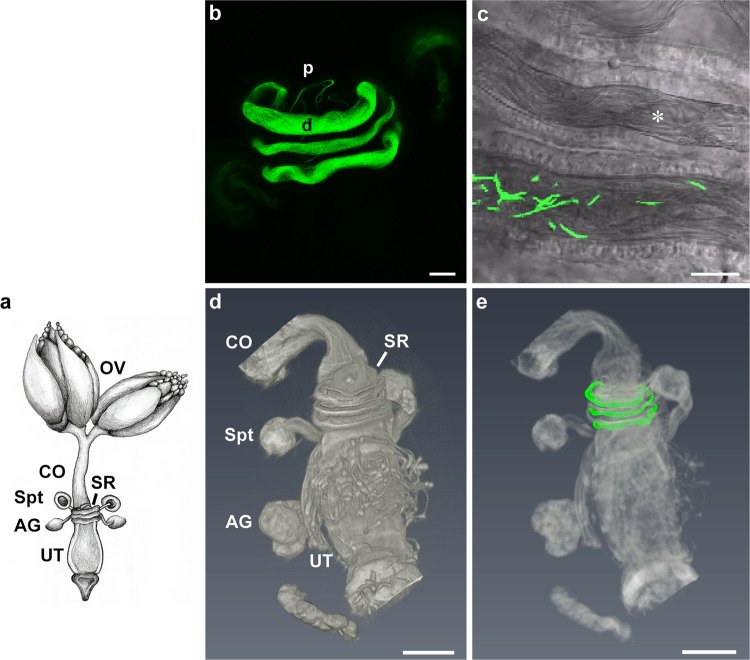
The fruit fly (Drosophila) female reproductive tract: confocal images of the sperm-storage organ filled with GFP-labelled sperm (panels b and c, the unit's microscopy), next to a schematic (a) and micro-CT renderings made at another facility (d, e).
Figure 1 from Zelinger et al., Communications Biology (2024): Three-dimensional correlative microscopy of the Drosophila female reproductive tract reveals modes of communication in seminal receptacle sperm storage. Licence: CC BY 4.0.
Original caption
Confocal laser scanning microscopy and micro computed tomography (microCT) visualization of the distal D. melanogaster seminal receptacle and the lower reproductive tract. a Schematic image of the Drosophila female reproductive tract showing the ovaries (OV), common oviduct (CO), seminal receptacle (SR), a pair of spermathecae (Spt), female accessory glands (AG) and a uterus (UT). b Representative confocal maximum projection image of seminal receptacle of 3-day-old female mated to dj-GFP male at 24 h post-mating; note the distal (d) and proximal (p) regions of the seminal receptacle. c Confocal bright field and fluorescence image of 3-day-old female mated to pro-GFP male showing sperm heads (GFP) and tails (bright field, marked by white asterisk) inside the distal seminal receptacle lumen. MicroCT 3D images of the lower reproductive tract (d) and a correlative image (microCT and confocal) (e) of sperm in the seminal receptacle indicating the position of the distal and proximal regions in relation to the spermatheca and the uterus. Scale bar: b = 20 µm; c–e = 100 µm.

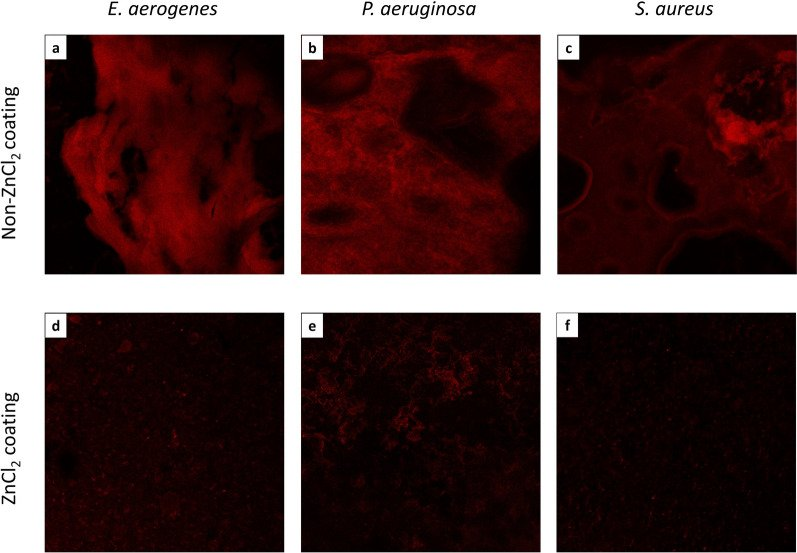
Confocal images of three bacterial species grown as biofilms in the lab on nasal splints with and without a zinc chloride coating, stained with propidium iodide.
Figure 2 from Noach et al., Scientific Reports (2023): Zinc chloride is effective as an antibiotic in biofilm prevention following septoplasty. Licence: CC BY 4.0.
Original caption
Confocal production of bacterial biofilm in vitro, as evaluated by CLSM. Enterobacter aerogenes (a,d), Pseudomonas aeruginosa (b,e) and Staphylococcus aureus (c,f) biofilms were grown on ZnCl2-coated splints and on non-ZnCl2-coated splints as positive growth controls. Pieces of these splints were stained with propidium iodide (PI) and evaluated by CLSM.

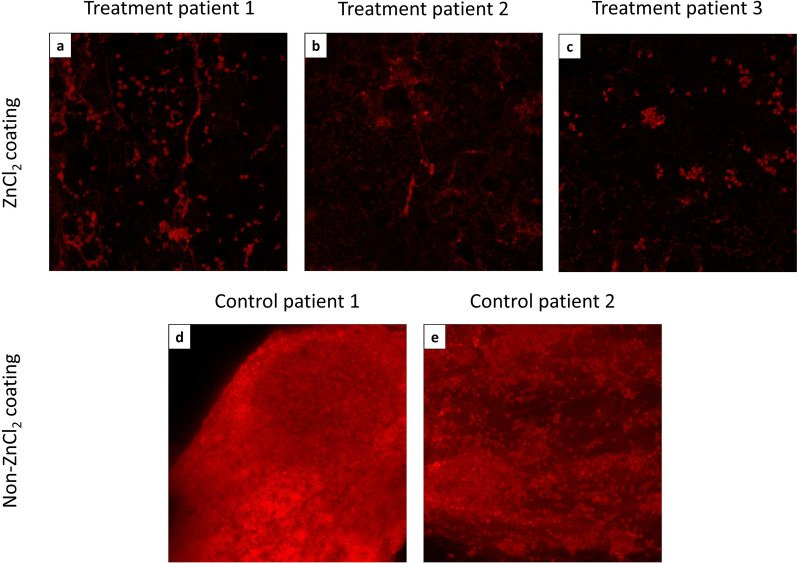
Confocal images of bacterial biofilm on nasal splints removed from patients after nose surgery, comparing zinc chloride-coated splints with uncoated splints from patients given antibiotics.
Figure 4 from Noach et al., Scientific Reports (2023): Zinc chloride is effective as an antibiotic in biofilm prevention following septoplasty. Licence: CC BY 4.0.
Original caption
Confocal productions of bacterial biofilm, in vivo, on splints, post insertion, as evaluated by CLSM. Pieces of ZnCl2-coated splints from three patients’ noses (the treatment patients) (a–c) and non-ZnCl2-coated splints from the noses of two patients who were given prophylactic antibiotics (the negative growth control) (d,e) were stained with PI and evaluated by CLSM.

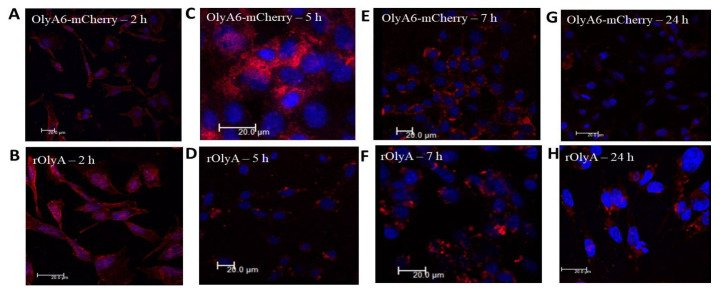
Confocal immunofluorescence images of cultured preadipocytes (HIB-1B cells) showing where the protein ostreolysin A, or its mCherry-tagged form, sits inside the cells from 2 to 24 hours after treatment.
Figure 3 from Berke et al., Biomedicines (2022): Critical Sites on Ostreolysin Are Responsible for Interaction with Cytoskeletal Proteins. Licence: CC BY 4.0.
Original caption
Intracellular distribution of rOlyA and OlyA6-mCherry at different time points: 2 h (A,B), 5 h (C,D), 7 h (E,F) and 24 h (G,H) in fixed HIB-1B preadipocytes. Representative images of immunofluorescence using antibodies against rOlyA (10 µg mL−1) immunostained with Alexa Fluor 594 or OlyA6-mCherry (30 µg mL−1) mCherry (610 nm). Fixed HIB-1B cells were incubated with rOlyA or OlyA6-mCherry, followed by treatment with anti-rOlyA antibodies and the secondary antibodies conjugated with Alexa Fluor 594. Scale bar = 20 µm.

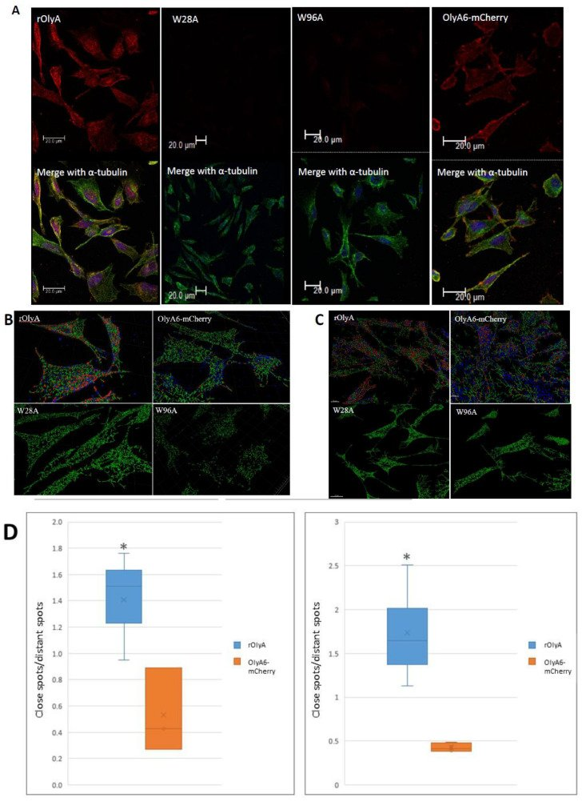
Preadipocytes treated with ostreolysin A and two mutant forms, with microtubules stained: the confocal images in panel A are the unit's microscopy, panels B and C are 3D Imaris analyses of the confocal stacks and panel D is box plots.
Figure 8 from Berke et al., Biomedicines (2022): Critical Sites on Ostreolysin Are Responsible for Interaction with Cytoskeletal Proteins. Licence: CC BY 4.0. The publisher split this figure into two image files; they are stacked here, one above the other, without cropping.
Original caption
Colocalization of rOlyA and α-tubulin in HIB-1B cells at 150 min post-treatment. HIB-1B cells were treated with rOly, W28A, W96A 10 μg mL−1 and OlyA6-mCherry 30 μg mL−1. Confocal microscopy imaging (A) and spatial distribution of the visualization by Imaris analysis (B–D). (A) Represented distribution in treated preadipocytes and α-tubulin interaction from confocal microscopy. Fixed cells were stained with anti-rOlyA antibodies (red, top panel), anti-α-tubulin antibodies (green) and DAPI (bottom panel—merged images). Intracellular microtubules (MTs) were determined by z-stack acquisition in a confocal microscope. Scale bars = 20 μm. (B) Imaris analysis represents protein interaction with α-tubulin filaments in treated cells. rOlyA and OlyA6-mCherry colocalize with α-tubulin filaments, whereas mutants W28A and W96A do not. (C) Imaris analysis of protein interaction with β-tubulin filament in treated cells. Representative cells were selected from a random field of view on the coverslip. The resulting images were analyzed with Imaris software. Finely spaced confocal stacks were acquired to reconstruct a 3D cell volume. Deconvolved stacks were analyzed via Imaris software to generate spots corresponding to the individual rOlyA or OlyA6-mCherry spots and to analyze the colocalization with α/β-tubulin filaments. (D) Efficiency of interaction with α-tubulin (left panel) and β-tubulin (right panel), graphic representation. Analysis performed with Imaris software to generate spots corresponding to α-tubulin- and rOly-containing protein from confocal images. Quantification of the cytoplasmic foci that contain both α-tubulin and rOlyA (close—colocalized, distant—not colocalized). The proportions of the total spots in each cell that were colocalized, and those that were not colocalized, are presented in a box-and-whisker plot. * p-value < 0.0001.

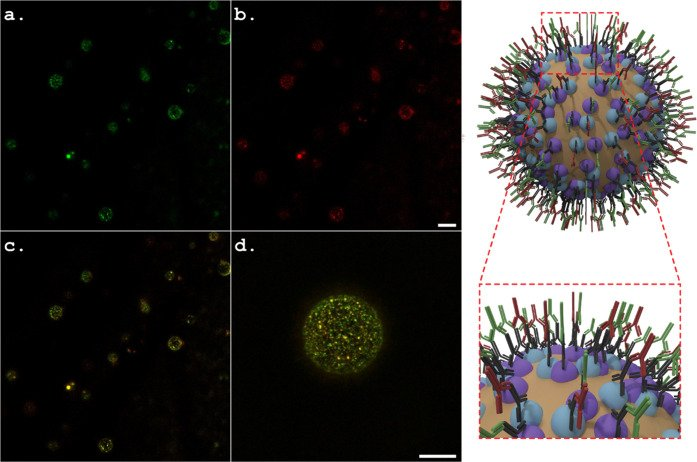
Confocal fluorescence images of oil droplets in an emulsion stabilised by plant virus-like particles, with antibody labels showing the two viral coat proteins on the droplet surfaces; a schematic of a droplet is on the right.
Figure 5 from Mechrez et al., ACS Applied Bio Materials (2022): Platform for Active Vaccine Formulation Using a Two-Mode Enhancement Mechanism of Epitope Presentation by Pickering Emulsion. Licence: CC BY 4.0.
Original caption
Characteristic confocal fluorescence microscopy images of 20:80 o/w Pickering emulsions stabilized by 1.3 wt % VLPs: (a) ToBRFV CP detection in Pickering emulsions subjected to specific fluorescent antibodies (Alexa Fluor 488) against ToBRFV using the green channel; (b) PepMV CP detection in Pickering emulsions subjected to specific fluorescent antibodies (Alexa Fluor 594) against PepMV using the red channel; and (c,d) low and high magnifications of the fluorescence signals in Pickering emulsions using combined green and red channels. A schematic illustration of the oil droplets in the VLP-stabilized Pickering emulsions is depicted on the right of the fluorescent images; the scale bar is identical for a and b and for c and d and represents 10 μm.

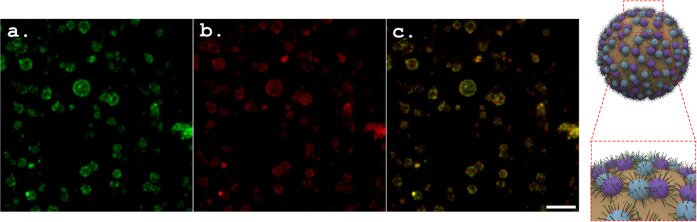
Confocal fluorescence images of emulsion droplets coated with virus-like particles that carry a fluorescent SARS-CoV-2 peptide, showing the peptide (green) and the coat protein (red) in the same place; a schematic is on the right.
Figure 7 from Mechrez et al., ACS Applied Bio Materials (2022): Platform for Active Vaccine Formulation Using a Two-Mode Enhancement Mechanism of Epitope Presentation by Pickering Emulsion. Licence: CC BY 4.0.
Original caption
Characteristic confocal fluorescence microscopy images of 20:80 o/w Pickering emulsions stabilized by 1.3 wt % VLP/fluorescent epitope conjugates: (a) a [5(6)-FAM] labeled SARS-CoV-2 S1 epitope visualized on oil droplets with the green channel; (b) PepMV-CP detection using Alexa Fluor 594-specific fluorescent antibodies, visualized with the red channel; (c) colocalization of the green and red fluorescent signals (denoted in orange) visualized with both the green and red channels. A schematic illustration of the oil droplets in the Pickering emulsions stabilized by VLP/epitope conjugates is depicted on the right of the fluorescent images; the scale bar is for all images and represents 5 μm.

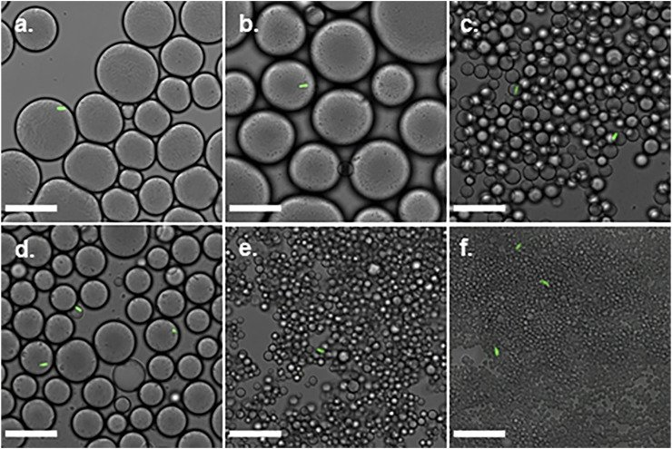
Confocal images of single GFP-labelled fungal spores (Metarhizium brunneum conidia) captured in oil droplets of a titania-stabilised emulsion, at two oil-to-water ratios (40:60, 50:50) and three titania concentrations (0.4, 1 and 2 wt%).
Figure 5 from Kotliarevski et al., Frontiers in Chemistry (2021): Single-Conidium Encapsulation in Oil-in-Water Pickering Emulsions at High Encapsulation Yield. Licence: CC BY 4.0.
Original caption
Confocal microscopy images of single-cell encapsulation of 0.02% Triton X-100 Metarhizium brunneum Mb7-GFP conidia suspension in titania-NH2 Pickering emulsion oil/water ratio. (A) 40:60, 0.4wt%. (B) 50:50, 0.4wt%. (C) 40:60, 1wt%. (D) 50:50, 1wt%. (E) 40:60, 2wt%. (F) 50:50, 2wt%. Scale bar is 30 μm.

Brightfield and confocal images of toluene droplets in water stabilised by silica nanoparticles and carbon nanotubes, with fluorescently labelled nanotubes (green) forming a layer around the oil droplets (red).
Figure 8 from Grzegorzewski et al., Polymers (2019): In situ Fabrication of Multi-Walled Carbon Nanotubes/Silica Hybrid Colloidosomes by Pickering Emulsion Templating Using Trialkoxysilanes of Opposite Polarity. Licence: CC BY 4.0.
Original caption
Visualization of the complex colloidal layer at the emulsion interface. (a) If MWNTs are fluorescently labelled with 6-AF, the oil droplets are surrounded by an intense green fluorescent layer indicating the presence of MWNTs at the o/w interface. The oil phase is easily identified by its intense red fluorescence, stemming from Nile Red. Sample composition: 20 vol% toluene-in-water with 2.0 wt% SiO2, 12 mg 6-AF conjugated MWNTs, and 0.2 M APTES and DTES. Scale bar is 20 μm. (b) In case of pristine MWNTs, the 6-AF cannot chemically conjugated to the nanotubes but is physisorbed to the MWNTs. Again, a green fluorescent layer is surrounding the droplet. This control experiment shows that also pristine MWNTs assemble at the o/w interface. Agglomerates of MWNTs are visible inside the oil droplets. Some of the MWNTs. However, were also transferred into the water phase, where an intensive aggregation was observed due to their inherent hydrophobicity. Sample composition: 50 vol% toluene-in-water with 2.0 wt% SiO2, 1 mg MWNTs, and 0.2 M APTES and DTES. Scale bar is 10 μm. (c) In the absence of MWNTs in the silica emulsions, no green fluorescent layer at the droplet periphery can be seen. 6-AF remains solved in the water phase without any adsorption to the silica particles. Control system made of 50 vol% toluene-in-water with 2.0 wt% SiO2, and 0.2 M APTES and DTES. Scale bar is 50 μm. From left to right: Bright field image, confocal images (green and red channels), and overlaid channels.

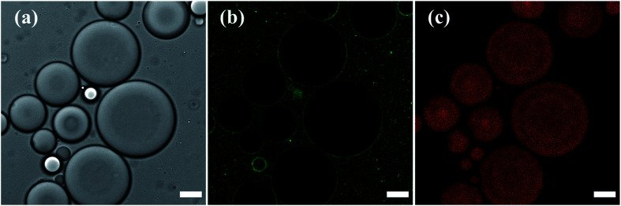
Confocal images of toluene droplets in water stabilised by dye-labelled silica nanoparticles, in transmitted light, in green (the nanoparticles around each droplet) and in red (Nile red in the oil).
Figure 3 from Itzhaik Alkotzer et al., RSC Advances (2019): In situ interfacial surface modification of hydrophilic silica nanoparticles by two organosilanes leading to stable Pickering emulsions. Licence: CC BY-NC 3.0 (non-commercial licence).
Original caption
Confocal microscopy images of 1 : 1 v/v Pickering toluene-in-water emulsion stabilized by 1% w/v 6-aminofluorescein labelled-silica nanoparticles (SiO2-dye) functionalized by DTES and APTES, and stained with Nile Red (scale bar 20 μm): (a) transmission image of emulsion droplets; (b) green channel of (a), with SiO2-dye particles concentrated around the oil droplets, proving Pickering emulsion formation; (c) red channel of (a) showing the Nile Red signal coming from the toluene droplets, thus proving oil-in-water emulsion formation.

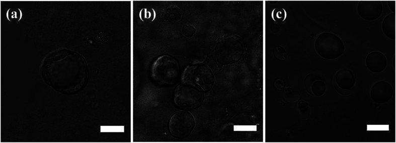
Confocal images of emulsion droplets while the solvent evaporates, comparing silica shells that keep their shape with droplets that shrink and collapse.
Figure 6 from Itzhaik Alkotzer et al., RSC Advances (2019): In situ interfacial surface modification of hydrophilic silica nanoparticles by two organosilanes leading to stable Pickering emulsions. Licence: CC BY-NC 3.0 (non-commercial licence).
Original caption
Confocal microscopy images of Pickering emulsion droplets recorded during solvent evaporation under ambient conditions (scale bar 20 μm in all images): (a) and (b) SiO2 colloidal shell structures obtained from in situ DTES-and-APTES-functionalized SiO2-stabilized o/w emulsion. (c) In case of prior modification of silica, in SiO2–APTES-stabilized o/w emulsion, shrinkage of emulsion droplets occurs as the silica nanoparticles start to aggregate and eventually collapse on one side of the droplets.
Histology and brightfield

Breast muscle of 10-day-old broiler chickens from a control and an HMTBa-supplemented group: Sirius Red/Fast Green-stained sections imaged on the unit's EVOS FL Auto (B, C), the fibres found automatically by a Fiji workflow with Cellpose and MorphoLibJ (D, E), and a plot of the fibre-diameter distribution (A).
Figure 3 from Dayan et al., Poultry Science (2023): A deep learning-based automated image analysis for histological evaluation of broiler pectoral muscle. Licence: CC BY 4.0. Reproduced by the authors. Resized for the web.
Original caption
Myofiber diameter distribution in the pectoral muscle of 10-day-old broiler. Myofibers are clustered in bin intervals of 5 μm; (A) diameter distribution in percentage of total myofibers from 2 treatment groups, that is, control and HMTBa. (B, C) show 1 representative field of original sirius red fast green stained images from control and HMTBa treatments. Images are generated using EVOS FL Auto-inverted microscope with ×60 magnification and are comprised of 12 stitched fields; (D) and (E) myofiber identification by automated image analysis measurements performed using Fiji ImageJ with Cellpose and MorphoLibJ plugins.
Image analysis

The automated workflow for measuring muscle fibres in broiler chicken breast muscle: Sirius Red/Fast Green-stained sections imaged on the unit's EVOS FL Auto (A) are analysed with a Fiji workflow that finds each fibre with Cellpose (B), turns the fibres into measurable regions with MorphoLibJ (C) and exports their sizes (D).
Figure 1 from Dayan et al., Poultry Science (2023): A deep learning-based automated image analysis for histological evaluation of broiler pectoral muscle. Licence: CC BY 4.0. Reproduced by the authors. Resized for the web.
Original caption
Automated image analysis workflow. (A) Raw images comprised of 12 stitched fields of ×60 magnification were generated using EVOS FL Auto-inverted microscope. Image processing included: (B) detection of the myofibers with BIOP Cellpose wrapper plugin; (C) conversion of the label masks to regions of interest (ROIs) with the MorphoLibJ plugin. The morphological analysis included the extraction of myofiber metrics. (D) The lesser diameter (μm) and cross-sectional area (μm2) were exported and saved to Excel files for further analysis and statistics.
Papers by year
Newest first. The unit's staff are in bold. Each title links to the paper.
Open access The paper is free to read; the badge names its licence.
Imaged at the unit The paper itself says so: the unit's staff are credited for the imaging, the unit is acknowledged, or a unit instrument is named with a staff co-author. Select the badge to see the instruments named in the paper. No badge means the paper does not say so clearly, not that the unit was not involved.
40 of 40 papers shown
2026
-
Open access · CC BY-NC 4.02 figures in the gallery
Imaged at the unit
Instruments named in the paper: Leica Stellaris 5 FLIM STED confocal; JEOL JSM-7800F SEM; EVOS FL Auto
2025
-
Open access · CC BY 4.0
-
Open access · CC BY-NC 4.0
Imaged at the unit
Instruments named in the paper: confocal (model not named in main text); light sheet (model not named in main text); TEM (not named) -
Open access · CC BY-NC-ND 4.0
Imaged at the unit
Instruments named in the paper: Leica TCS SP8 confocal
2024
-
DNA Delivery to Intact Plant Cells by Casein Nanoparticles with Confirmed Gene Expression
-
Entrapment of antimicrobial compounds in a metal matrix for crop protection
Open access · CC BY-NC-ND 4.0Imaged at the unit
Instruments named in the paper: JEOL JSM-IT100 SEM; JEOL 7800 SEM -
MXene-CNC super performing composite films for flexible and degradable electronics
Open access · CC BY-NC-ND 4.0 -
Open access · CC BY 4.0
-
Open access · CC BY-NC-ND 4.0
Imaged at the unit
Instruments named in the paper: JEOL JSM-7800F SEM -
Open access · CC BY 4.04 figures in the gallery
Imaged at the unit
Instruments named in the paper: Leica SP8 confocal; JEOL JSM-7800F SEM with STEM detector
2023
-
Open access · CC BY 4.02 figures in the gallery
Imaged at the unit
Instruments named in the paper: EVOS FL Auto -
Distinctive foliar features and volatile profiles in three Ambrosia species (Asteraceae)
-
Macromolecular sheets direct the morphology and orientation of plate-like biogenic guanine crystals
Open access · CC BY 4.0 -
Open access · CC BY 4.01 figure in the gallery
Imaged at the unit
Instruments named in the paper: JEOL JSM-7800F SEM -
Zinc chloride is effective as an antibiotic in biofilm prevention following septoplasty
Open access · CC BY 4.04 figures in the galleryImaged at the unit
Instruments named in the paper: JEOL JSM-7800F SEM; Leica SP8 confocal
2022
-
A standardized nomenclature and atlas of the female terminalia of Drosophila melanogaster
Open access · CC BY 4.0Imaged at the unit
Instruments named in the paper: Leica TCS SP8 MP confocal -
Critical Sites on Ostreolysin Are Responsible for Interaction with Cytoskeletal Proteins
Open access · CC BY 4.02 figures in the galleryImaged at the unit
Instruments named in the paper: Leica SP8 confocal -
Cucumber fruit skin reticulation affects post-harvest traits
-
Open access · CC BY 4.03 figures in the gallery
Imaged at the unit
Instruments named in the paper: Leica SP8 confocal; JEOL JSM-7800F cryo-SEM
2021
-
Open access · CC BY 4.0
-
Corrigendum (2021): 10.1093/plcell/koab177; Erratum (2021): 10.1093/plcell/koab159
-
Sensing stress responses in potato with whole-plant redox imaging
-
Single-Conidium Encapsulation in Oil-in-Water Pickering Emulsions at High Encapsulation Yield
Open access · CC BY 4.01 figure in the galleryImaged at the unit
Instruments named in the paper: Leica SP8 confocal
2020
-
Open access · CC BY 4.01 figure in the gallery
Imaged at the unit
Instruments named in the paper: JEOL JSM-7800F SEM
2019
-
Open access · CC BY 4.0
-
Open access · CC BY 4.03 figures in the gallery
Imaged at the unit
Instruments named in the paper: Leica SP8 confocal; JEOL JSM-7800F cryo-SEM; EVOS FL Auto -
Open access · CC BY-NC 3.03 figures in the gallery
Imaged at the unit
Instruments named in the paper: Leica SP8 confocal; JEOL JSM-7800F cryo-SEM
No papers match these filters.
Conference abstracts
Image credits
Every figure on this page comes from the PMC Open Access copy of the paper and is reused under the licence named. Figures are not cropped or edited; any change is noted against the figure. The text descriptions are ours, written from the original captions.
- Figure 1 from Gershkoviz et al., Current Research in Food Science (2026): Growth factors-infused cellulose scaffolds support cost-efficient proliferation and differentiation of bovine stem cells for cultivated meat. Licence: CC BY-NC 4.0 (non-commercial licence). Source: PMC13195363 (PMC Open Access subset). See it in the gallery.
- Figure 3 from Gershkoviz et al., Current Research in Food Science (2026): Growth factors-infused cellulose scaffolds support cost-efficient proliferation and differentiation of bovine stem cells for cultivated meat. Licence: CC BY-NC 4.0 (non-commercial licence). Source: PMC13195363 (PMC Open Access subset). See it in the gallery.
- Figure 1 from Zelinger et al., Communications Biology (2024): Three-dimensional correlative microscopy of the Drosophila female reproductive tract reveals modes of communication in seminal receptacle sperm storage. Licence: CC BY 4.0. Source: PMC10847118 (PMC Open Access subset). See it in the gallery.
- Figure 6 from Zelinger et al., Communications Biology (2024): Three-dimensional correlative microscopy of the Drosophila female reproductive tract reveals modes of communication in seminal receptacle sperm storage. Licence: CC BY 4.0. Source: PMC10847118 (PMC Open Access subset). See it in the gallery.
- Figure 8 from Zelinger et al., Communications Biology (2024): Three-dimensional correlative microscopy of the Drosophila female reproductive tract reveals modes of communication in seminal receptacle sperm storage. Licence: CC BY 4.0. Source: PMC10847118 (PMC Open Access subset). See it in the gallery.
- Figure 9 from Zelinger et al., Communications Biology (2024): Three-dimensional correlative microscopy of the Drosophila female reproductive tract reveals modes of communication in seminal receptacle sperm storage. Licence: CC BY 4.0. Source: PMC10847118 (PMC Open Access subset). See it in the gallery.
- Figure 1 from Dayan et al., Poultry Science (2023): A deep learning-based automated image analysis for histological evaluation of broiler pectoral muscle. Licence: CC BY 4.0. Reproduced by the authors. Resized for the web. Source: the publisher's high-resolution file. See it in the gallery.
- Figure 3 from Dayan et al., Poultry Science (2023): A deep learning-based automated image analysis for histological evaluation of broiler pectoral muscle. Licence: CC BY 4.0. Reproduced by the authors. Resized for the web. Source: the publisher's high-resolution file. See it in the gallery.
- Figure 1 from Marinov et al., Horticulture Research (2023): Microscopic and metabolic investigations disclose the factors that lead to skin cracking in chili-type pepper fruit varieties. Licence: CC BY 4.0. Source: PMC10548408 (PMC Open Access subset). See it in the gallery.
- Figure 2 from Noach et al., Scientific Reports (2023): Zinc chloride is effective as an antibiotic in biofilm prevention following septoplasty. Licence: CC BY 4.0. Source: PMC10206080 (PMC Open Access subset). See it in the gallery.
- Figure 4 from Noach et al., Scientific Reports (2023): Zinc chloride is effective as an antibiotic in biofilm prevention following septoplasty. Licence: CC BY 4.0. Source: PMC10206080 (PMC Open Access subset). See it in the gallery.
- Figure 5 from Noach et al., Scientific Reports (2023): Zinc chloride is effective as an antibiotic in biofilm prevention following septoplasty. Licence: CC BY 4.0. Source: PMC10206080 (PMC Open Access subset). See it in the gallery.
- Figure 6 from Noach et al., Scientific Reports (2023): Zinc chloride is effective as an antibiotic in biofilm prevention following septoplasty. Licence: CC BY 4.0. Source: PMC10206080 (PMC Open Access subset). See it in the gallery.
- Figure 3 from Berke et al., Biomedicines (2022): Critical Sites on Ostreolysin Are Responsible for Interaction with Cytoskeletal Proteins. Licence: CC BY 4.0. Source: PMC9598724 (PMC Open Access subset). See it in the gallery.
- Figure 8 from Berke et al., Biomedicines (2022): Critical Sites on Ostreolysin Are Responsible for Interaction with Cytoskeletal Proteins. Licence: CC BY 4.0. The publisher split this figure into two image files; they are stacked here, one above the other, without cropping. Source: PMC9598724 (PMC Open Access subset). See it in the gallery.
- Figure 5 from Mechrez et al., ACS Applied Bio Materials (2022): Platform for Active Vaccine Formulation Using a Two-Mode Enhancement Mechanism of Epitope Presentation by Pickering Emulsion. Licence: CC BY 4.0. Source: PMC9382630 (PMC Open Access subset). See it in the gallery.
- Figure 6 from Mechrez et al., ACS Applied Bio Materials (2022): Platform for Active Vaccine Formulation Using a Two-Mode Enhancement Mechanism of Epitope Presentation by Pickering Emulsion. Licence: CC BY 4.0. Source: PMC9382630 (PMC Open Access subset). See it in the gallery.
- Figure 7 from Mechrez et al., ACS Applied Bio Materials (2022): Platform for Active Vaccine Formulation Using a Two-Mode Enhancement Mechanism of Epitope Presentation by Pickering Emulsion. Licence: CC BY 4.0. Source: PMC9382630 (PMC Open Access subset). See it in the gallery.
- Figure 5 from Kotliarevski et al., Frontiers in Chemistry (2021): Single-Conidium Encapsulation in Oil-in-Water Pickering Emulsions at High Encapsulation Yield. Licence: CC BY 4.0. Source: PMC8666500 (PMC Open Access subset). See it in the gallery.
- Figure 2 from Khadka et al., Microorganisms (2020): Host Specificity and Differential Pathogenicity of Pectobacterium Strains from Dicot and Monocot Hosts. Licence: CC BY 4.0. Source: PMC7599833 (PMC Open Access subset). See it in the gallery.
- Figure 8 from Grzegorzewski et al., Polymers (2019): In situ Fabrication of Multi-Walled Carbon Nanotubes/Silica Hybrid Colloidosomes by Pickering Emulsion Templating Using Trialkoxysilanes of Opposite Polarity. Licence: CC BY 4.0. Source: PMC6780190 (PMC Open Access subset). See it in the gallery.
- Figure 9 from Grzegorzewski et al., Polymers (2019): In situ Fabrication of Multi-Walled Carbon Nanotubes/Silica Hybrid Colloidosomes by Pickering Emulsion Templating Using Trialkoxysilanes of Opposite Polarity. Licence: CC BY 4.0. Source: PMC6780190 (PMC Open Access subset). See it in the gallery.
- Figure 10 from Grzegorzewski et al., Polymers (2019): In situ Fabrication of Multi-Walled Carbon Nanotubes/Silica Hybrid Colloidosomes by Pickering Emulsion Templating Using Trialkoxysilanes of Opposite Polarity. Licence: CC BY 4.0. Source: PMC6780190 (PMC Open Access subset). See it in the gallery.
- Figure 3 from Itzhaik Alkotzer et al., RSC Advances (2019): In situ interfacial surface modification of hydrophilic silica nanoparticles by two organosilanes leading to stable Pickering emulsions. Licence: CC BY-NC 3.0 (non-commercial licence). Source: PMC9076063 (PMC Open Access subset). See it in the gallery.
- Figure 6 from Itzhaik Alkotzer et al., RSC Advances (2019): In situ interfacial surface modification of hydrophilic silica nanoparticles by two organosilanes leading to stable Pickering emulsions. Licence: CC BY-NC 3.0 (non-commercial licence). Source: PMC9076063 (PMC Open Access subset). See it in the gallery.
- Figure 7 from Itzhaik Alkotzer et al., RSC Advances (2019): In situ interfacial surface modification of hydrophilic silica nanoparticles by two organosilanes leading to stable Pickering emulsions. Licence: CC BY-NC 3.0 (non-commercial licence). Source: PMC9076063 (PMC Open Access subset). See it in the gallery.